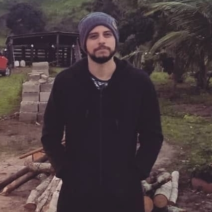

Dados pessoais
Atualmente focado no meu desenvolvimento como programador Front-End, tendo como fonte principal de estudo os cursos disponibilizados na plataforma de ensino Alura.
Adriano Almeida Alves
Adriano_alves_2008@hotmail.com
(74)99945-6227
Feira de Santana - Bahia
Cursos HTML 5 e CSS 3
HTML5 e CSS3 parte 1: A primeira página da Web - 8 Horas (ALURA)
HTML5 e CSS3 parte 2: Posicionamento, listas e navegação - 8 Horas (ALURA)
HTML5 e CSS3 parte 3: Trabalhando com formulários e tabelas - 8 Horas (ALURA)
HTML5 e CSS3 parte 4: Avançando no CSS - 8 Horas (ALURA)
HTML e CSS: praticando HTML/CSS - 8 Horas (ALURA)
Bootstrap: criação de uma single-page responsiva - 12 Horas (ALURA)
Bootstrap 4: Criando uma landing page responsiva - 8 Horas (ALURA)
CSS: Dispondo elementos com Flexbox e Grid - 8 Horas (ALURA)
Flexbox: Posicione elementos na tela - 9 Horas (ALURA)
CSS Grid: Simplificando layouts - 8 Horas (ALURA)
Layouts Responsivos: Trabalhando com layouts mobile - 7 Horas (ALURA)
Arquitetura CSS: Descomplicando os problemas - 8 Horas (ALURA)
Guia de estilos: montando páginas com componentes - 8 Horas (ALURA)
SASS: CSS sintaticamente espetacular - 8 Horas (ALURA)
HORAS TOTAIS - 116 HORAS
Cursos JavaScript
Lógica de programação I: os primeiros programas com Javascript e HTML - 16 Horas (ALURA)
Lógica de programação II: Pratique com desenhos, animações e um jogo - 10 Horas (ALURA)
JavaScript: primeiros passos com a linguagem - 10 Horas (ALURA)
JavaScript: manipulando o DOM - 6 Horas (ALURA)
JavaScript: Programando a Orientação a Objetos - 10 Horas (ALURA)
JavaScript para Web: Crie páginas dinâmicas - 10 Horas (ALURA)
Javascript: Programando na linguagem da WEB - 20 Horas (ALURA)
FUNDAMENTOS DO JAVASCRIPT: TIPOS, VARIÁVEIS E FUNÇÕES - 12 Horas (ALURA)
JavaScript na Web: validação de Formulários e HTML5 - 8 Horas (ALURA)
JavaScript na Web: armazenando dados no navegador - 6 Horas (ALURA)
JavaScript: conhecendo o Browser e padrões de projeto - 12 Horas (ALURA)
JavaScript: interfaces e Herança em Orientação a Objetos - 12 Horas (ALURA)
HORAS TOTAIS - 132 HORAS
Outros cursos
Git e Github: controle e compartilhe seu código - 6 Horas (ALURA)
Acessibilidade web parte 1: tornando seu front-end inclusivo - 6 Horas (ALURA)
Expressões regulares: capturando textos de forma mágica - 12 Horas (ALURA)
SEO: princípios da otimização de sites - 8 Horas (ALURA)
HORAS TOTAIS - 32 HORAS
Cursos React
React: desenvolvendo com JavaScript - 14 Horas (ALURA)
React: abstraindo seu CSS com Styled Components - 6 Horas (ALURA)
FUNDAMENTOS DE REACT: ESCREVENDO COM TYPESCRIPT - 12 Horas (ALURA)
React: lidando com arquivos estáticos - 10 Horas (ALURA)
REACT: CONHECENDO A BIBLIOTECA REACT ROUTER - 10 Horas (ALURA)
Next.js: explorando o framework - 8 Horas (ALURA)
HORAS TOTAIS - 60 HORAS
Cursos Mobile
React Native: criando um app - 10 Horas (ALURA)
HORAS TOTAIS - 10 HORAS
Formação
Formação HTML e CSS (61 horas) - Alura
Formação Front-end (150 horas) - Alura
Não tenho formação acadêmica em cursos voltados para a área de programação